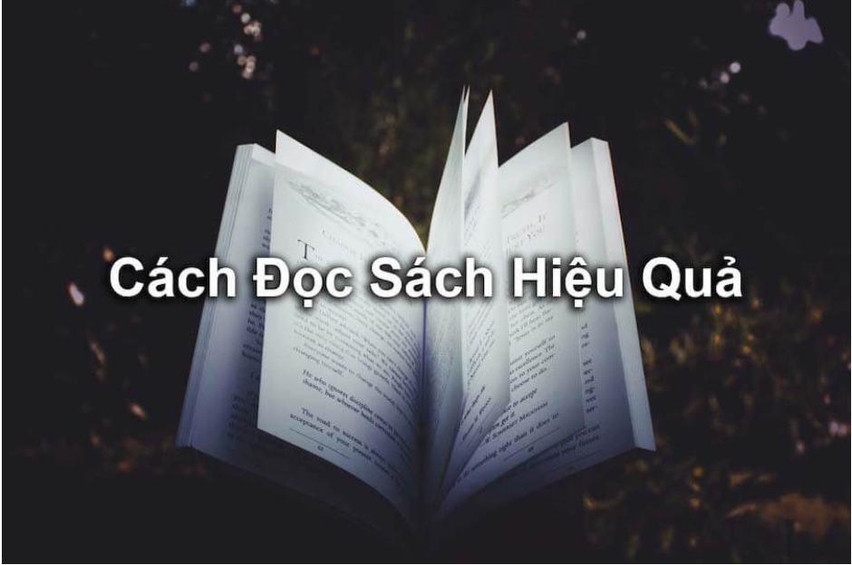

“Năm nay tôi sẽ đọc 100 quyển sách?”
Bạn có thể bắt gặp những mục tiêu đọc sách như thế này ở đâu đó.
Nhưng liệu đọc 100 hay 1000 quyển có quan trọng?
Với tôi, vấn đề không nằm ở số lượng. Nếu bạn đọc 100 quyển sách mà quên sạch kiến thức được nói đến trong đó thì bạn đang cực kì lãng phí thời gian.
Điều quan trọng là sau khi đọc xong một quyển sách bạn thì bạn có thể làm gì với những điều vừa học được.
Bài viết này sẽ giới thiệu bạn cách làm thế nào để đọc sách hiệu quả.
Nội Dung:
5 Bước Đọc Sách Hiệu Quả Bạn Nên Áp Dụng
Bước 1: Biết Được Mục Đích Đọc Sách Của Bạn Là Gì

Bạn nên học cách làm việc có mục đích, không nên làm việc một cách tùy hứng.
Ngay cả việc đọc sách cũng vậy, bạn phải xác định được mục tiêu đạt được của mình sau khi đọc xong một quyết sách là gì.
Đó có thể là học thêm được một kỹ năng mới, biết được những kiến thức mới giúp ích cho công việc hay giúp bản thân có được một động lực cho cuộc sống,...
Nếu như bạn không biết mục đích đọc sách của mình là gì, bạn sẽ đọc một cách lan man, vô định, lãng phí công sức và thời gian.
Vì thế, trước khi đọc bất kỳ một quyết sách nào, hãy tự trả lời câu hỏi: “Mình đọc quyển sách này để làm gì?” nhé.

Sau khi xác định được mục đích đọc sách của mình rồi, thì giờ là lúc bạn cần tìm được sách phục vụ cho mục đích đọc đó.
Vậy làm thế nào để tìm được một quyển sách như thế?
Đơn giản lắm, những gì bạn cần làm chỉ là lên Google tìm kiếm với từ khóa Sách hay về + “mục đích đọc sách". Ví dụ: sách hay về cuộc sống.
Khi đó Google sẽ trả về kết quả những quyển sách nên đọc cùng những bài đánh giá chi tiết.
Dựa vào đó, bạn sẽ chọn được quyển sách thích hợp cho mình.
Một cách nữa để tìm sách đó là bạn có thể hỏi bạn bè, đồng nghiệp của mình.
Hãy nhờ họ giới thiệu những quyển sách mà họ đã đọc và hỏi họ xem những quyển ấy đã giúp họ như thế nào.
Có thể không phải tất cả các phần trong cuốn sách đều phục vụ cho mục đích của bạn.
Bởi vậy, bạn cần đọc lướt qua cuốn sách để nắm được tổng quan nội dung trước khi tiến hành đọc sâu hơn.
Hãy xem qua phần mục lục trước. Phần này giống như tóm tắt các ý chính của quyển sách.
Có những quyển sách bạn không nhất thiết phải đọc từ đầu tới cuối. Bằng việc xem qua trước mục lục, bạn có thể biết được phần nào cần thiết, phần nào thú vị để có thể đọc ngay vào phần đó.
Tiếp đến là phần giới thiệu, bạn không nên bỏ qua phần này.
Vì trong đó tác giả có thể sẽ đề cập đến cách để sử dụng quyển sách một cách hiệu quả nhất.

Sau khi lướt qua cuốn sách một lần, bạn đã biết đại khái nội dung cuốn sách. Giờ là lúc bạn cần đọc kỹ để hiểu được cặn kẽ nội dung của nó.
Tùy vào từng phần nội dung mà bạn lựa chọn cách đọc cho hợp lý.
Nội dung nào dễ, có thể hiểu nhanh thì bạn chỉ cần đọc lướt qua, nắm ý chính là được.
Với những phần khó hơn, bạn cần vừa đọc vừa nghiền ngẫm cho thấm. Nếu có thể hiểu được thì tốt, không hiểu được thì cũng không sao, bạn có thể đọc lại sau.
Không Nên Chỉ Đọc Một Lần
Hầu hết mọi người đều đọc một cuốn sách đúng một lần rồi bỏ. Đó là một sai lầm mà nhiều người mắc phải.
Vì bạn khó có thể nắm được hết tinh thần của quyển sách với chỉ một lần đọc. Chắc chắn sẽ có những chỗ mà bạn chưa hiểu được cặn kẽ vấn đề.
Đó là lý do tại sao bạn cần đọc lại quyển sách hơn một lần.
Ghi Chú Lại Những Phần Quan Trọng
Sẽ có những đoạn thú vị, các trích dẫn quan trọng,... mà bạn sẽ muốn lưu lại để sử dụng cho sau này.
Những trích dẫn như thế sẽ rất có ích đối với bạn sau này. Chẳng hạn bạn có thể dùng để tham khảo khi viết một bài viết, hoặc đề cập đến trong một cuộc nói chuyện.
Hơn nữa, đó có thể là những phần trọng yếu của quyển sách, phục vụ cho mục đích của bạn khi đọc quyển sách đó.
Vì thế, trong quá trình đọc sách, hãy ghi chú lại những gì bạn cảm thấy tâm đắc, có giá trị.
Phản Biện Khi Đọc
Tuy bạn đọc sách để tham khảo, học hỏi nhưng không phải tất cả những điều trong sách nói đều hợp lý.
Bên cạnh tiếp thu những kiến thức có giá trị, bạn cũng cần phải sẵn sàng phản biện những điều mà bạn cho là chưa đúng.
Vậy làm thế nào để biết là nó chưa đúng?
Bạn có thể vận dụng những kiến thức mà mình đã tích lũy.
Và nếu đọc thấy chỗ nào mà bạn nghi ngờ không biết có đúng hay không, hãy tìm những nguồn tham khảo có uy tín khác để xác nhận.
Phân Tích, Suy Ngẫm
Đừng chỉ đọc suông, hãy cố gắng phân tích xem vì sao tác giả lại viết như vậy.
Hãy tự hỏi một số câu hỏi:
Tại sao tác giả lại dùng ý này?
Liệu có thể dùng ý khác hay không?
Tác giả kết luận vậy đã đầy đủ chưa?
Có cần bổ sung gì không?
Khi có những phân tích, suy ngẫm như vậy bạn sẽ hiểu sâu cuốn sách hơn.

Bạn có biết điều lãng phí nhất khi đọc một quyển sách là gì không?
Đó là đọc xong mà không áp dụng, thực hành gì cả.
Kiểu giống như đầu năm bạn lập mục tiêu hoành tráng lắm, xong rồi lại để đó mà không bắt tay vào hành động thì ước mơ vẫn chỉ là mơ ước.
Bạn đã tốn công sức, thời gian để đọc một quyển sách thì hãy tìm cách để vận dụng triệt để những điều trong sách vào công việc cũng như cuộc sống.
Hãy đúc kết lại những điều đã học được, rút ra được những bài học quý báu từ sách và tự hỏi:
Mình có thể ứng dụng những điều này như thế nào đây?